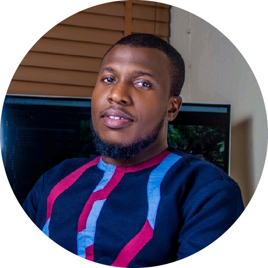

Objective Statement
Graduating top of my class as a computer science student, I knew i haven't completely been
equipped with the necessary skills for the job market. I took some other courses such as design
development, brand development, graphics design and recently user interface design. Then I decided
further take a Full-Stack Web development trainings and courses and this has opened me up to a
whole new journey and perspective in the internet and online global village. I look forward to
harnessing the skill and passion a a creative while connecting and working as a team-player with
other creatives.
Education
-
Primary School:
Police Children School - First School Leaving Certificate - 1993-2001
-
Junior Secondary School:
Federal Government College - Junior School Certificate - 2001-2004
-
Senior Secondary School:
Federal Government College - WAEC Certificate - 2004-2008
-
University:
Kwame Nkrumah University of Science and Technology, Kumasi, Ghana - Bachelor of Science - 2010-2013
Work Experience
-
Creative Lead:
Oregon Brand Company LLC - Apr. 2020 - Till Date
- Cordinate the daily activities of the creative and design team
- Give reports on the activities of the creative team and harmonize task across various departments
- Create content and creatives for the company and clients.
- Design websites for the organizations clients as well as run perfomance and speed tests on the website
- Manage and Mitigate the risk of failed project execution and late delivery of client projects while maintaining industry standards
-
Brand Strategist | Digital Marketer:
55 Lifts Consulting Ltd - Sept. 2018 - Mar. 2020
- Develop new media marketing strategies for the organization and myriad of clients
- Maintain Brand Consistency while developing proper branding and marketing materials
- Develop user-friendly interfaces for clients
- Monitor and implement projects within stipulated time
-
Team Lead - Graphics & Web:
One Dial NG Ltd - Jun. 2017 - Jul. 2018
- Develop marketing strategies for the e-commerce applications
- Monitor and implement project milestones within stipulated timeline
- Design and implement brand consistency for the organization across all social media platforms
- Manage customer relationship between the online Application platform between vendors and users
-
Creative Lead | Web & System Analyst:
Regsila Software Ltd - Mar. 2015 - Jun. 2017
- Develop marketing and brand communication strategies for the organisation
- Monitor and implement project milestones within stipulated timeline
- Extensively test all end-user systems
- Report to management directly and help in making key client-focused decisions
Awards and Certification
-
Primary School:
Most Inteligent Student and Most Punctual Student
-
Junior Secondary School:
Federal Government College - Junior School Certificate
-
Senior Secondary School:
SSCE O'Level (WASSCE) Certificate
-
University: Certifications and Awards -
First Class - Bsc. Computer Science (Hons)
Best Graduating Computer Science and Engineering Student
MEMBER - Institute of Electrical Electronics Engineers
MEMBER - National Society for Black Engineers
About MeContact Me